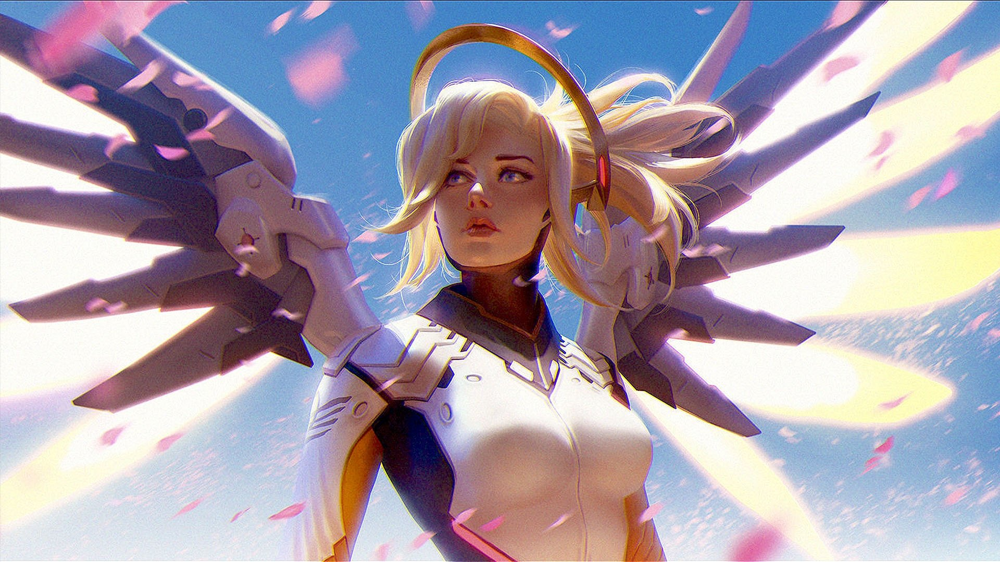

Mercy's lore.
"Heroes never die!"
guardian angel to those who come under her care, Dr. Angela Ziegler is a peerless healer, a brilliant scientist, and a staunch advocate for peace.
Overwatch
Ziegler rose to become the head of surgery at a prominent Swiss hospital before pioneering a breakthrough in the field of applied nanobiology that radically improved the treatment of life-threatening illnesses and injuries. It was this expertise that attracted the attention of Overwatch.
Because her parents had been taken by war, Ziegler was opposed to the organization's militaristic approach to keeping global peace. Ultimately, she recognized that Overwatch offered her the opportunity to save lives on a much larger scale. As Overwatch's head of medical research, Angela sought to leverage her work for healing in frontline crises. The result was the Valkyrie swift-response suit, which Ziegler herself piloted on many Overwatch missions. During her Overwatch years, she once dressed as a witch for Halloween.
Despite her contributions to Overwatch, she was often at odds with her superiors and the organization's overarching aims. One example was the development of the biotic rifle by Torbjörn. Torbjörn provided assurances that the device was only intended for healing, but Ziegler maintained that this was setting Overwatch down a road that could lead to the weaponization of biotic technology, and that she had only conducted research in the field on the condition that it would not be used for offensive purposes.
Uprising
Seven years before the present day, Ziegler was involved in an unsanctioned mission authorized by Strike Commander Jack Morrison to end the King's Row Uprising in London, England. Earlier the same day, Ziegler argued with Morrison over Overwatch's inability to intervene in the conflict due to the English prime minister expressively forbidding of any Overwatch action within the United Kingdom. Dr. Ziegler expressed her concern for the thousands in the city who needed medical aid, and lamented how Overwatch was made to help people, not sit on the sidelines. After Jack authorized the mission, while preparing to board an aircraft, Ziegler welcomed Cadet Lena Oxton to the team. She commented on how her inspirational words convinced Jack to authorize the mission, and how he was very invested in her career, and had asked Ziegler to keep an eye on her. Zigler then told Oxton how she could call on her if she ever needed any help.
Ziegler en-route to London during the King's Row Uprising
The End Of Overwatch
In Overwatch's final days, the group was faced with a series of allegations, and Ziegler was interrogated in the hearings conducted by the United Nations. In light of the fight between Overwatch members Jack Morrison and Gabriel Reyes, Ziegler admitted that the outcome had been inevitable. They had drifted further and further apart ever since Morrison had been chosen over Reyes for the position of strike commander, and that rift had widened despite her efforts.
Post-Overwatch
When Overwatch dissolved, Ziegler dedicated herself to helping those affected by war. Though she spends most of her time caring for the broken and dispossessed in crisis areas around the world, Dr. Ziegler can be counted on to don her Valkyrie suit whenever innocents are imperiled, hoping to make a more peaceful world.
Recall
When Winston issued a recall of Overwatch agents, Mercy was in the Middle East. Mercy was unsure if Overwatch should be restored.
Mercy helps the innocent